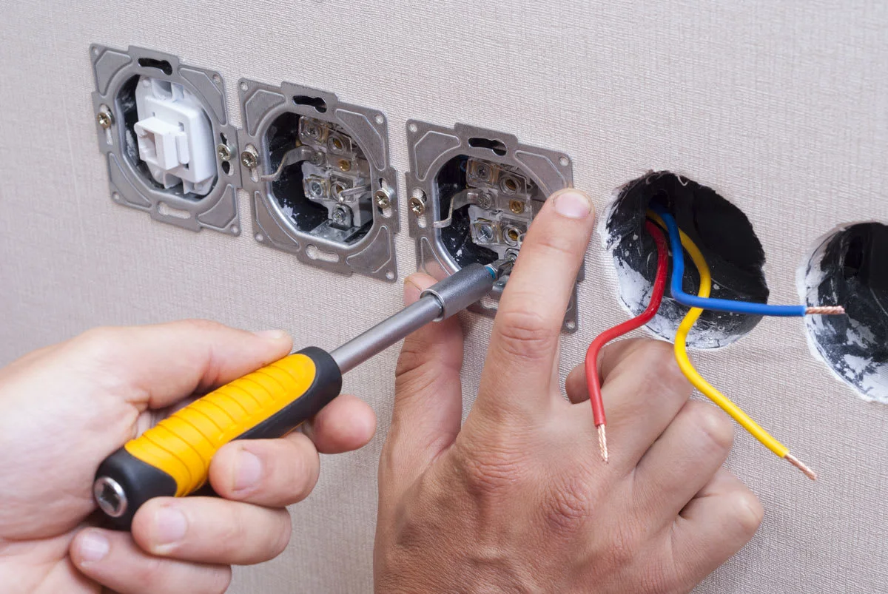
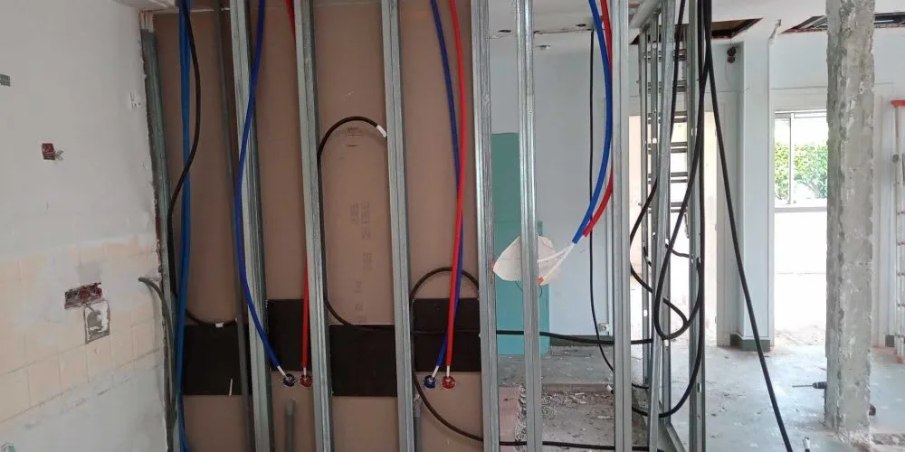
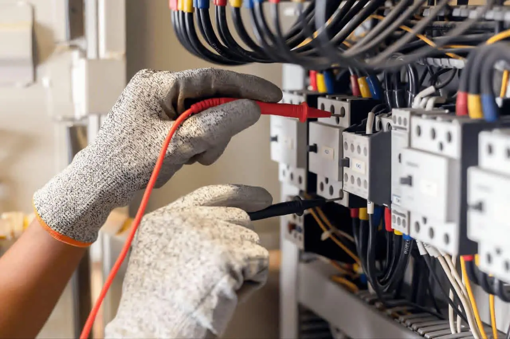
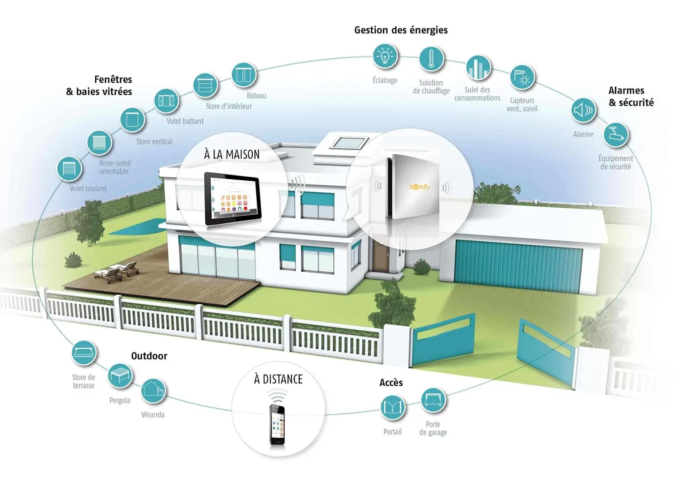
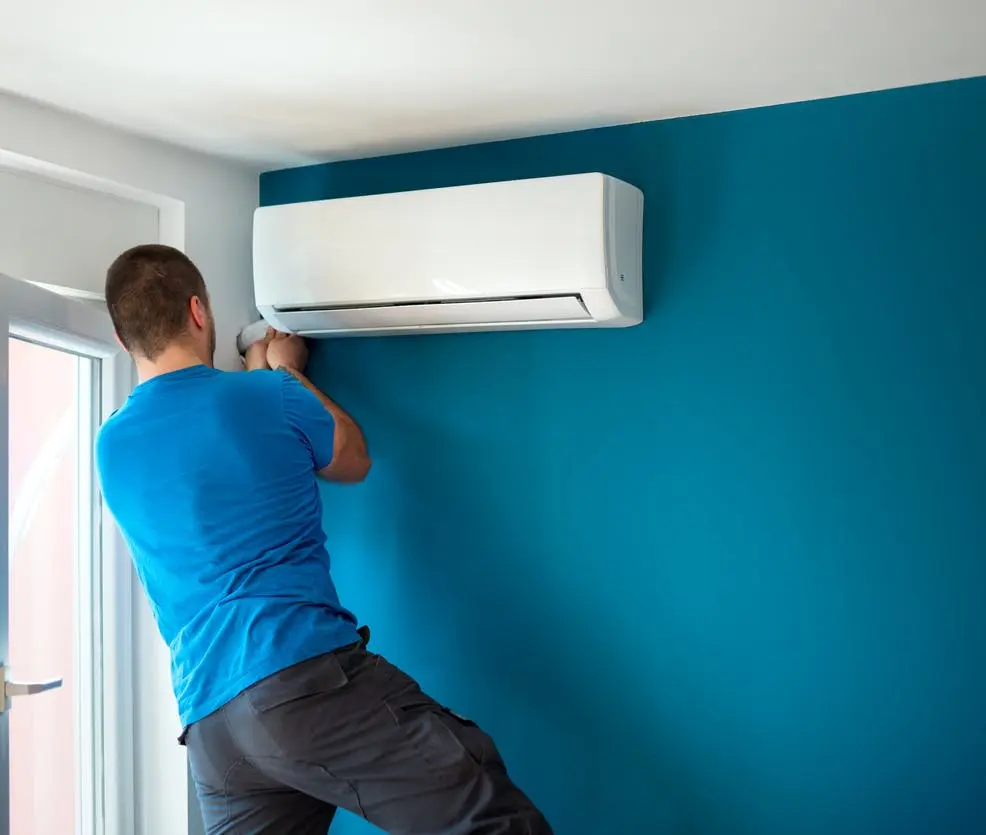
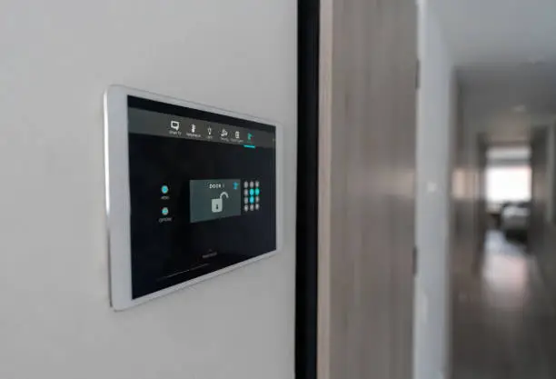

C
Client Google
Avis Google vérifié
★★★★★
Intervention rapide et travail très soigné. Les explications sur les travaux à réaliser étaient claires, et le devis respecté.
Intervention en Indre-et-Loire et départements voisins, avec plus de 30 ans d’expérience pour vos projets en rénovation, maison neuve, domotique et climatisation.
Client Google
Avis Google vérifié
★★★★★
Intervention rapide et travail très soigné. Les explications sur les travaux à réaliser étaient claires, et le devis respecté.
Client Google
Avis Google vérifié
★★★★★
Très bon contact, électricien ponctuel et professionnel. Les travaux de rénovation ont été réalisés proprement, dans les délais annoncés.
Client Google
Avis Google vérifié
★★★★★
Dépannage efficace suite à une panne générale. Explications simples, travail sérieux, je recommande.
Solution Courant réalise tous vos travaux d’électricité en maisons neuves et en rénovation, assure le dépannage rapide, et installe des solutions modernes de domotique et de climatisation.

Reprise complète ou partielle d'installations anciennes : remplacement de tableaux, réécriture de circuits, mise aux normes, éclairage et prises.

Pose complète d'électricité pour maisons et bâtiments neufs : câblage, tableaux, éclairage, prises et mise en service finale.

Intervention rapide sur coupures, court-circuits, disjoncteurs, prises défectueuses et diagnostic de panne pour rétablir le courant.

Installation de systèmes intelligents : contrôle de l'éclairage, du chauffage, de la sécurité et des ouvertures depuis tablette ou smartphone.

Installation et maintenance de climatisation murale et extérieure : pose de splits, raccordement, mise en service et entretien régulier.

Installation, mise en service et entretien de systèmes d’alarme pour sécuriser votre habitation ou vos locaux professionnels : détecteurs, sirènes et équipements de contrôle.
Solution Courant intervient autour de Sainte-Maure-de-Touraine, dans un rayon d’environ 80 km, en Indre-et-Loire et départements voisins.
Zone indicative : cercle d’environ 80 km autour de Sainte-Maure-de-Touraine.
Solution Courant est une entreprise d'électricité basée en Indre-et-Loire, fondée par Bertrand Grondin,
électricien depuis plus de 30 ans.
Forte de cette expérience, l’entreprise accompagne les particuliers et les professionnels pour tous leurs
projets électriques : rénovation d’installations anciennes, travaux en maisons neuves, dépannage rapide,
domotique et climatisation.
À taille humaine, Solution Courant privilégie la proximité, le conseil et la transparence : écoute du
besoin, explication des solutions proposées et devis clair avant intervention. Chaque chantier est réalisé dans
le respect des normes en vigueur, avec le souci de la sécurité, du confort et de la fiabilité à long terme.
Oui, nous pouvons intervenir rapidement en cas de panne totale de courant, disjoncteur qui saute en permanence, odeur de brûlé ou prise qui chauffe anormalement. En cas de doute sur la sécurité, il est préférable d’appeler plutôt que d’attendre.
Oui, tous nos devis sont gratuits et sans engagement. Nous prenons le temps d’évaluer votre installation et de vous proposer une solution adaptée avant tout démarrage de travaux.
Nous réalisons la rénovation d’installations anciennes, les installations complètes en maison neuve, le dépannage électrique, la mise aux normes de tableaux, la domotique, la climatisation et les systèmes d’alarme.
Nous intervenons principalement à Sainte-Maure-de-Touraine, en Indre-et-Loire et dans les départements voisins. N’hésitez pas à nous contacter pour vérifier si votre commune est desservie.
Vous nous contactez par téléphone ou via le formulaire en décrivant votre besoin. Nous convenons si nécessaire d’une visite sur place, puis nous vous envoyons un devis détaillé que vous pouvez accepter ou refuser librement.
Pour un dépannage, nous essayons d’intervenir le plus rapidement possible selon le planning, avec une priorité pour les situations urgentes. Pour les travaux plus importants, une date est définie avec vous après validation du devis.
Oui, intervenir sur une installation électrique sans les compétences et le matériel adaptés peut être dangereux pour vous et pour votre logement. Pour toute anomalie récurrente (disjoncteur qui saute, échauffement, odeur de brûlé), il est préférable de faire appel à un électricien qualifié.
Oui, nous pouvons vérifier l’état de votre installation, identifier les points non conformes et vous proposer une mise aux normes (tableau, protections différentielles, prises, liaisons équipotentielles, etc.).
Nous pouvons étudier la faisabilité d’une borne de recharge à domicile (puissance disponible, emplacement, sécurité) et vous proposer une solution adaptée à votre véhicule et à votre installation.
Oui, nos travaux sont couverts par les garanties légales en vigueur et une assurance professionnelle. Les modalités exactes sont précisées sur le devis et la facture.
Utilisez ce formulaire pour envoyer une demande à Solution Courant.
Téléphone : +33247654712
Email : solution.courant@gmail.com
Zone : Indre-et-Loire et départements limitrophes.
Secteur principal : Sainte-Maure-de-Touraine et alentours.